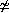

V
is:
V
is:
The flow graphs we consider in this paper are finite directed edge-labelled, node-labelled graphs where the incoming and outgoing edges to each node are ordered, and each edge has exactly one start node, but multiple finish nodes. We impose a type discipline to ensure that the edge and node labels match. These graphs are the same as Hasegawa's sharing graphs.
A single-coloured flow graph G over a signature
V
is:
 F.
F.
F.
F,
N : c and
c : X Y,
then
E : X and F : Y.
| Identity: | Composition: |
| Tensor: | |
| Symmetry: | |
| Diagonal: | |
| Terminal: | |
A morphism F between flow graphs G and G is:
is:
.
.
| Naturality of diagonal: |  | ||
| Terminal is natural: |
A relation R between flow graphs G and G is:
.
.
and E : X then E : X,
and N : c then N : c,
F
and G : E F
then E R E
and F R F, and
F in G,
N : E F in G
and N R N
then E R E
and F R F.
G
in the category of flow graphs.
A relation R between flow graphs G and G is a
simulation iff:
then
E is the nth outgoing edge of N in G
and N R N.
of G such that
E R E).
is a
bisimulation iff R and R-1 are simulations.
G and G are bisimilar (written
G  G)
iff there is a bisimulation between them.
G)
iff there is a bisimulation between them.
Note that any graph isomorphism is a simulation, and so isomorphic graphs are bisimilar. The converse is not true, since:
|
||
|
of G such that
E R E).
Proposition (Bisimulation is a congruence). Bisimulation is a congruence wrt the graph operations.

 iff:
iff:
Y1...Yn

 [[Xm]] [[Y1]] [[Yn]].
[[Xm]] [[Y1]] [[Yn]].
V form a category
Graph(V) over V where:
F
such that E : X and
F : Y, viewed up to bisimulation.
Proposition (Flow graphs form a category with finite products).
Graph(V) is a strict cartesian category over V.
Proof.
We have already defined the required operations, but we need to
show they satisfy the axioms for a cartesian category.
For this, we construct a bisimulation for each of the axioms.
Since flow graphs over V
form a cartesian category over V, there is a unique
morphism [[_]] from the free cartesian category over
V into Graph(V). We can
define this syntactically as the term algebra (with the type system
and axiomatization given for cartesian categories)
Term(V):
| f,g | ::= | idX | |
| | | f ; g | ||
| | | f  g g |
||
| | | symmX Y | ||
| | | copyX | ||
| | | discardX | ||
| | | c |
If terms can be proved equal using the axioms for a cartesian category
we shall write
 f = g.
f = g.
We would like to show soundness and completeness for this axiomatization,
that is
f = g
iff
[[f]] [[g]].
As is usual for such results, soundness is immediate, but completeness
requires a normal form result. Most of the rest of this section is
taken up by showing the required normalization results.
Proposition (Soundness).
If f = g
then [[f]] [[g]].
Proof.
Follows immediately from the fact that Graph(V)
is a cartesian category.
Proposition (Expressivity).
For any graph G, there is a term f
such that [[f]] G.
Proof.
Proved by induction on the number of outgoing edges of G.
A shuffle (ranged over by s) is any term not including constructors c. A permutation (ranged over by p) is any shuffle not including copy or discard.
Proposition (Completeness for shuffles).
If [[s1]] [[s2]]
then s1 = s2.
| n | ::= | |
| | | ||
| | |
f = g.
Proof.
First show by induction on syntax that for any normal f1 and f2, we can find
normal g such that
f1 f2 = g.
Then show by induction on syntax that for any normal f and shuffle s, we can find
normal g such that
f;s = g.
Then show by induction on syntax that for any normal f1 and f2, we can find
normal g such that
f1;f2 = g.
Finally show by induction on syntax that for any f, we can find normal g such
that f = g.
Define p_inv to be the permutation:
q)_inv =
p_inv q_inv
Proposition (Permutations are isos).
For any p,
p;p_inv = id
and
p_inv;p = id.
Proof. An induction on p.
Proposition (Cancellation of permutations). For any:
=
Proof. Let h be: f;p_inv. Then use soundness and p being an iso to show the required properties.
Proposition (Cancellation of nodes). For any:
=
[[g]]
then f = g.
Proof.
Find the normal form equal to g, and then
cancel permutations and nodes iteratively,
finishing with a use of completeness for shuffles,
to prove f = g.
Proposition (Initiality).
Graph(V) is the initial
cartesian category over V.
Proof.
By construction, Term(V) is the initial cartesian
category over V.
Since Term(V) is expressive, we
have a map term : Graph(V) Term(V) with the property that
[[term(G)]] G. By
soundness and completeness, this map is an isomorphism
in the category of categories with finite products
over V, and so
Graph(V) is the initial cartesian category
over V.